在2050年，世界面臨著一個末日危機，為了生存下去，一位勇敢的冒險者踏上了一段跳躍之旅，前往宇宙探索新生存地。他跳過森林、跳上天空、跳上宇宙，直到找到新的生存地，一路向上跳躍著，途中暗藏著寶藏與危機，向上探索著未知的旅程，最終他找到了適合繼續生存的超級星球。
遊戲介紹 |
|||
|
遊戲類型 : 2D跳躍、動作冒險 遊戲平台 : 手機ios/Android 操作 : 手機左右擺動控制角色左右，手指點擊螢幕可向上跳躍(長按增加跳躍力)。 |
|||
|
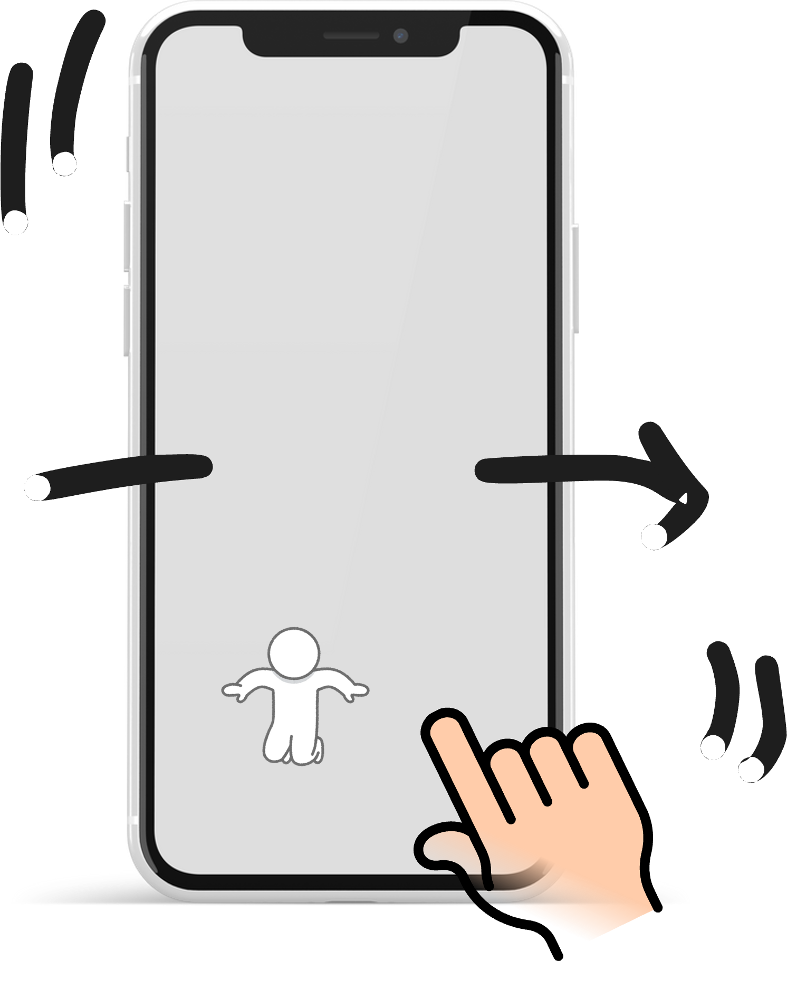 |
|||
| 遊戲玩法 | |||
| 重新向上，但在一定的位子會設有存檔點)，躲避陷阱、收集道具跟金幣，並挑戰自己能跳得多高，分數累積會經由陷阱、道具、金幣做加減分，最後會依照分數做各玩家之間的排名。 | |||
| 關卡挑戰 | |||
| 分為森林、天空、宇宙，隨著跳得越高，關卡的難度會增加，能跳到的平台更少或移動平台越快，出現更多陷阱和障礙。 | |||
|
森林關卡: 主角在尋求生存途中發掘了神奇魔豆，並在森林中下了它，出乎意外的，這棵魔豆迅速成長，成了他向上探險的道路。 |
|||
| 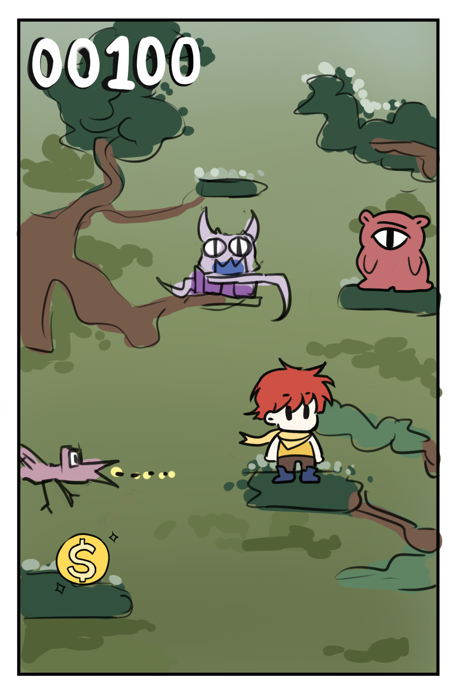 | 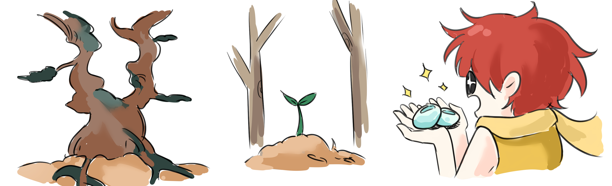 | ||
|
天空關卡: 他跳到了魔豆成長的頂端，有一個精靈為他施展了魔法，使他踏在雲朵中不會輕易墜落，他就踏著一朵朵雲繼續向上探索。 |
|||
| 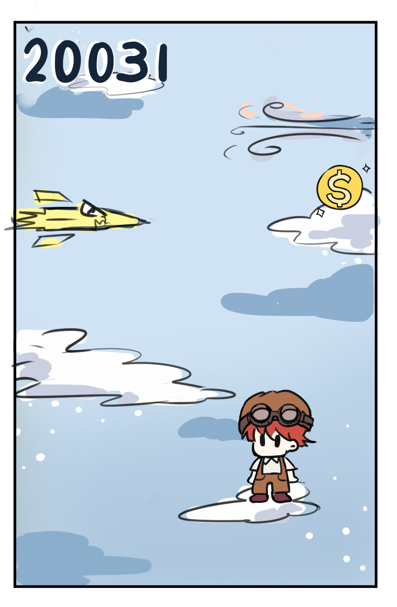 | 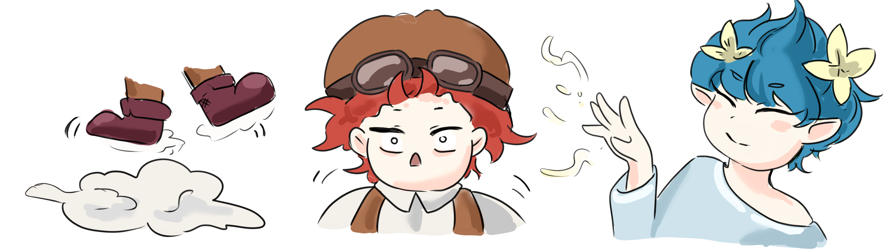 | ||
|
宇宙關卡: 畫：到了天空的頂端有一座天空中的城堡，主角找到了被遺棄的飛船，飛到宇宙中繼續向上探險。 結局: 最終他找到了適合居住的超級星球，新的生存地。 |
|||
|
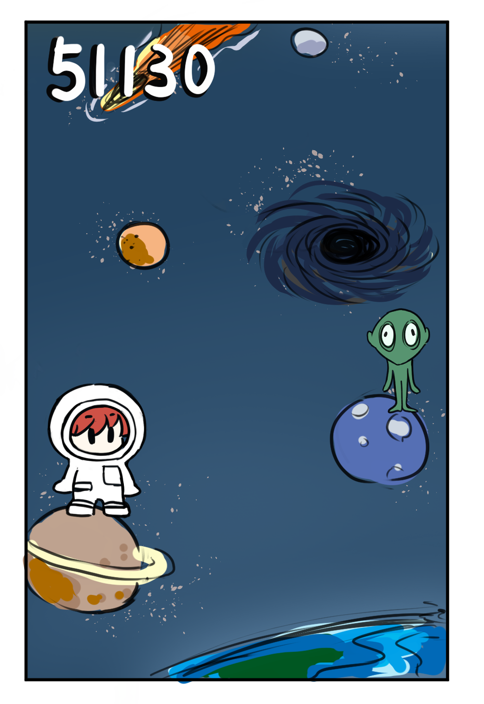 |
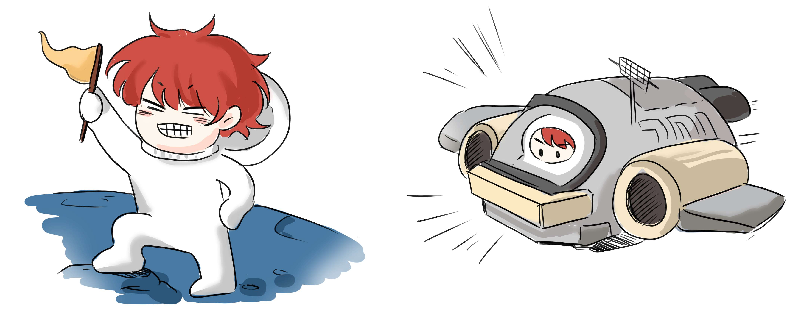 | ||
| 角色設計 | |||
| 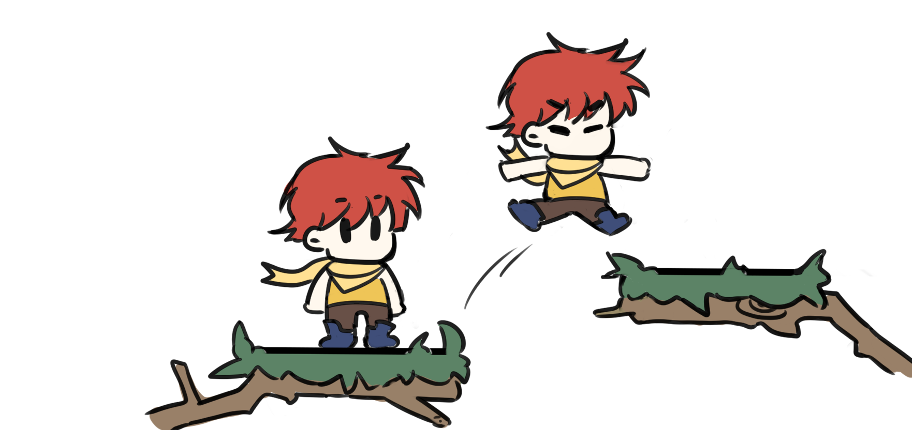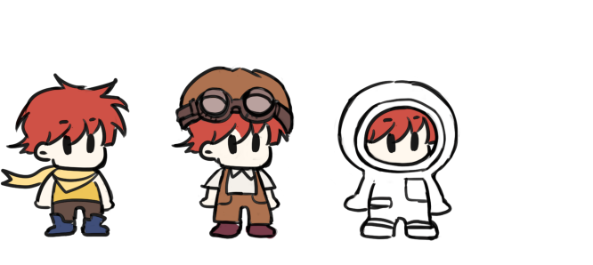 | |||
| 道具與金幣 | |||
| 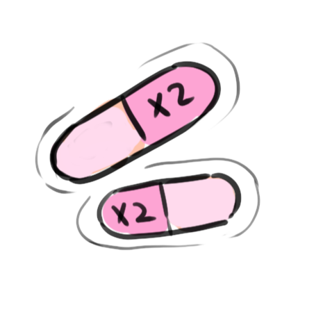 | 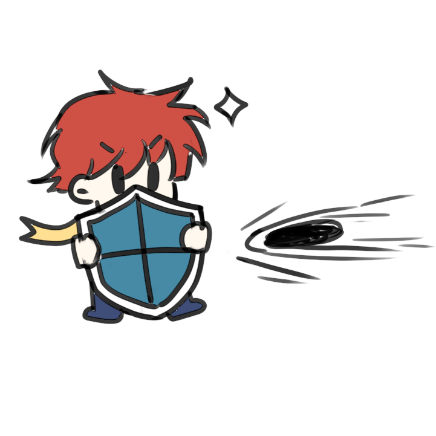 |
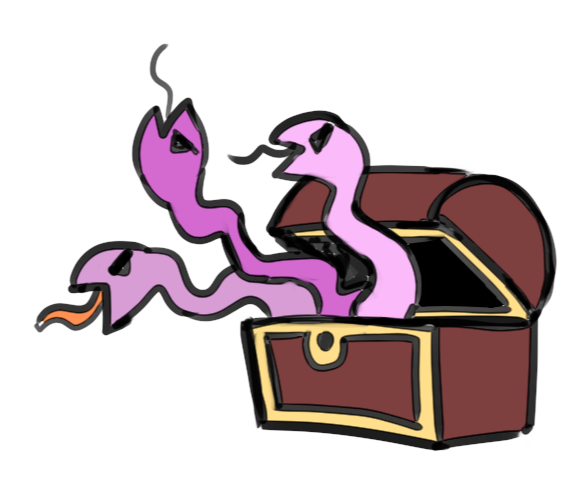 |
|
| 「雙重跳躍」 | 「護盾」 | 「寶箱」 | |
| 角色擁有兩倍的跳躍力。 | 在一定時間內，使角色免疫傷害。 | 隨機道具或陷阱。 | |
| 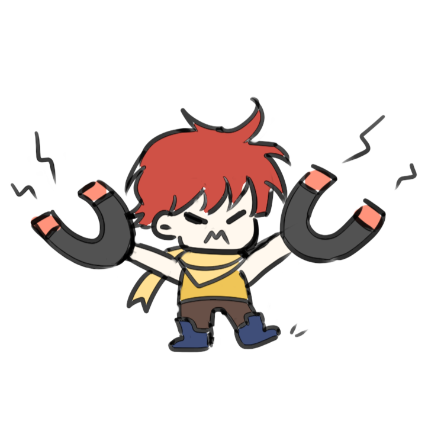 | |||
| 「金幣」 | 「火箭」 | 「磁鐵」 | |
| 加分作用。 | 短暫向上衝刺，不會掉入陷阱跟障礙。 | 自動吸取一定範圍內的道具或金幣。 | |